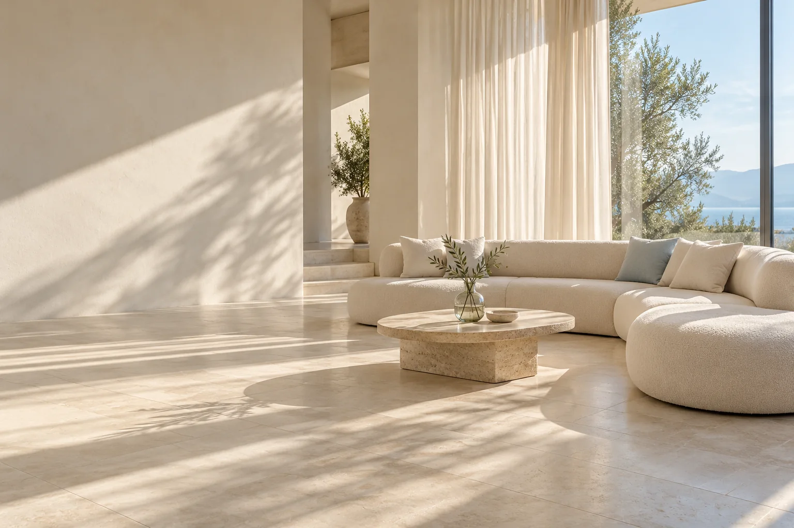
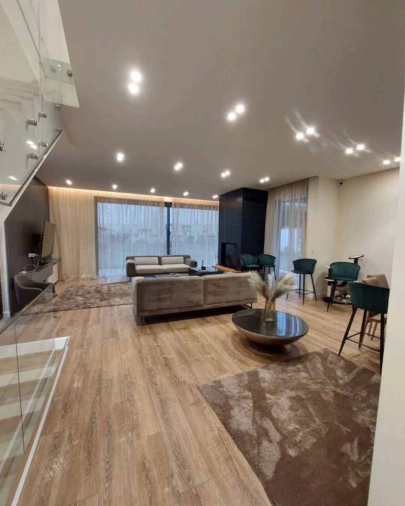

PËR SHTËPINË
Shtëpi & vila
Pastrim i përgjithshëm dhe i detajuar për apartamente, shtëpi e vila, me mundësi mirëmbajtjeje mujore.

Shërbime profesionale për shtëpi, vila, zyra, hotele dhe biznese në të gjithë Shqipërinë.
Zgjidhni ambientin ose shërbimin
Nga pastrimi i shtëpisë te ambientet e biznesit dhe larja e tapicerive, zgjidhni shërbimin sipas nevojës suaj.
Pastrim i përgjithshëm dhe i detajuar për apartamente, shtëpi e vila, me mundësi mirëmbajtjeje mujore.
Shërbime për zyra, hotele, restorante, klinika dentare, shkolla, palestra dhe ambiente të jashtme.
Larje profesionale për dyshekë, kolltuqe, kënde e divane, me trajtim të përshtatur për materialin. Dyshekët thahen brenda ditës.
Larje xhamash dhe pllakash, përfshirë pastrim me makineri, si edhe pastrim pas punimeve.
Operojmë në Tiranë dhe në të gjithë Shqipërinë.
Pastrim i përgjithshëm dhe i detajuar për apartamente, shtëpi dhe vila, me kujdes për kuzhinën, banjën, dhomat dhe dyshemetë.
Pastrim i përshtatur me madhësinë dhe nevojat e ambientit.
Kujdes për dhomat, sipërfaqet dhe hapësirat e përbashkëta.
Pastrime të kujdesshme të sipërfaqeve dhe dyshemeve.
Shërbim i plotë për freskinë e ambientit tuaj.
Na tregoni zonën dhe shpeshtësinë që ju përshtatet.
Shërbime pastrimi për zyra, biznese, hotele dhe institucione në Tiranë dhe në të gjithë Shqipërinë.
Rezervo pastrimAmbient pune i pastër dhe i kujdesshëm për klientët e stafin.
Kujdes për ambientet e mikpritjes dhe hapësirat e përbashkëta.
Pastrime për institucione dhe hapësira sportive.
Orar pastrimi i përshtatur me funksionimin e biznesit tuaj.
Pastrojmë edhe ambiente të jashtme dhe sipërfaqe të përbashkëta.
Rrëshqisni për të parë ndryshimin pas pastrimit të pllakave të ballkonit.
Rezervo larje pllakashLarje profesionale për dyshekë, kolltuqe, kënde e divane, me trajtim të përshtatur për materialin. Dyshekët thahen brenda ditës.
Rezervo pastrimLarje dhe higjienizim për tapiceritë e dhomës së gjumit.
Larje në thellësi për tapiceritë që përdorni çdo ditë.
Aparatura profesionale për pastrim të kujdesshëm të materialit.
Procesi përshtatet sipas llojit të njollës dhe gjendjes së tapicerisë.
Produkte të zgjedhura sipas materialit që pastrohet.
Koha e tharjes varet nga kushtet e ambientit.
Trajtimi dhe çmimi përshtaten sipas madhësisë, materialit dhe gjendjes së tapicerisë.
Larje xhamash dhe pllakash, si edhe pastrim pas rikonstruksionit. Përdorim makineri për larjen e pllakave dhe përshtatim punën me ambientin.
Rezervo pastrimPastrime për dritare dhe sipërfaqe xhami.
Larje e thellë për pllaka sipas llojit të sipërfaqes.
Pastrimi i ambientit pas përfundimit të punimeve.
Na tregoni për tarracën ose hapësirën që duhet pastruar.

Kompani pastrimi Kristal ofron pastrime për shtëpi, vila, zyra, hotele, biznese dhe institucione. Përdorim solucione profesionale dhe kujdesemi për ambientet në Tiranë e në të gjithë Shqipërinë.
Nga pastrimet e banesave te zyrat, hotelet, klinikat dhe ambientet e jashtme.
Përzgjedhim produktet dhe mënyrën e punës sipas sipërfaqes dhe shërbimit.
Rezervoni një pastrim të vetëm ose kërkoni mirëmbajtje mujore për ambientin tuaj.
Nga afër me pastrimin profesional të tapicerive.
Më shumë në InstagramVideo referencë
Keni një pyetje tjetër? Na shkruani dhe e diskutojmë së bashku.
Na pyesni në WhatsAppNa shkruani në WhatsApp ose telefononi 069 354 3074. Na tregoni shërbimin dhe zonën ku ndodheni; mund të përdorni edhe formularin më poshtë.
Çmimi varet nga madhësia, materiali, gjendja dhe shërbimi i kërkuar. Foto ose video na ndihmojnë të diskutojmë çmimin më saktë.
Dyshekët thahen brenda ditës. Koha për tapiceritë e tjera varet nga materiali, lagështia dhe ajrosja e ambientit.
Përdorim solucione profesionale dhe produkte larëse të përzgjedhura sipas materialit dhe gjendjes së tij.
Po. Ofrojmë larje në thellësi për dyshekë, kolltuqe, kënde dhe divane, me solucione profesionale dhe tharje të dyshekëve brenda ditës.
Po. Pastrojmë apartamente, vila, zyra, hotele, restorante, shkolla, palestra e klinika dentare. Mund të rezervoni edhe mirëmbajtje mujore.
Formulari përgatit mesazhin në WhatsApp. E dërgoni ju; çmimi, data dhe orari konfirmohen më pas me ekipin.
Mesazhe nga klientët pas shërbimit. Faleminderit për besimin.
Të parët, punë shembullore! 👏👏👏★★★★★
🔥 Super, më të mirët!★★★★★
👏 Ju lumshin duart, super!★★★★★
Ju lumshin duart!★★★★★
Ju lumshin duart, jeni super kompani! 🤗👏👏👏👏★★★★★
Jeni më të mirët! 😍★★★★★
O, ju jeni yjeee! 😂 Jeni super punëtore, lum ato që bien në dorën tuaj! 👏👏★★★★★
👏👏👏 Ndrit veni! ✨★★★★★
E kënaqur me ju! 😊★★★★★
Përshtypjet e klientëve do të shfaqen së shpejti këtu.
Na tregoni çfarë doni të lani dhe ku ndodheni. Në WhatsApp mund të dërgoni edhe foto të këndit apo tapicerisë suaj.
069 354 3074 069 675 4527